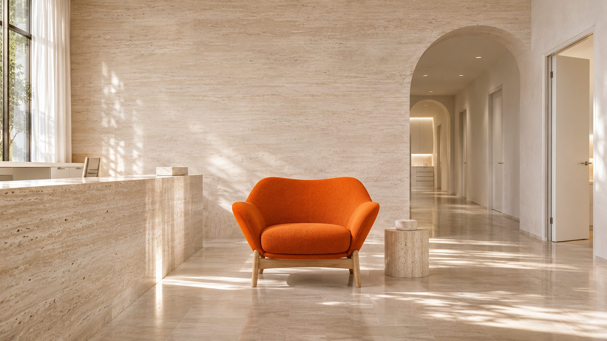
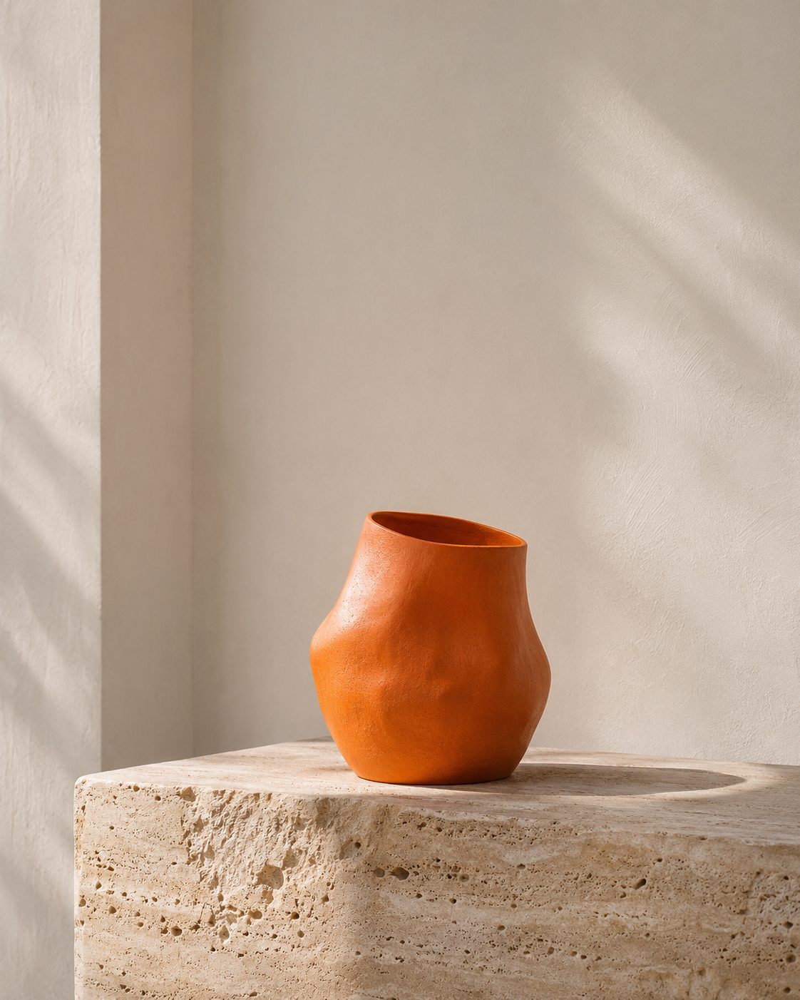
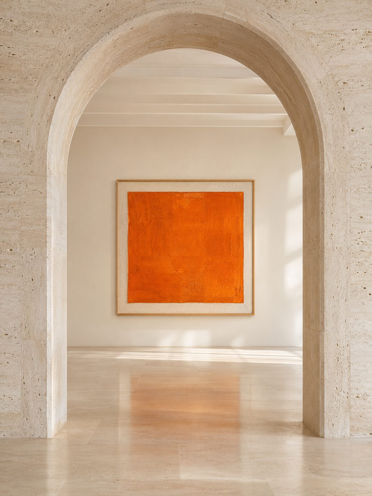
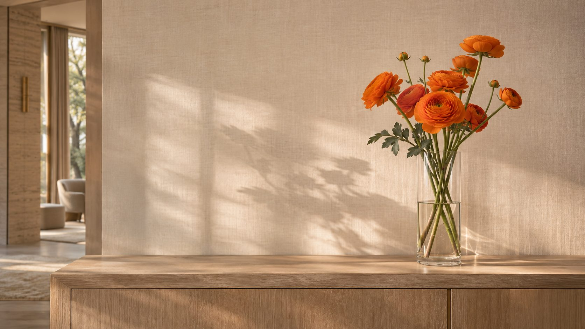
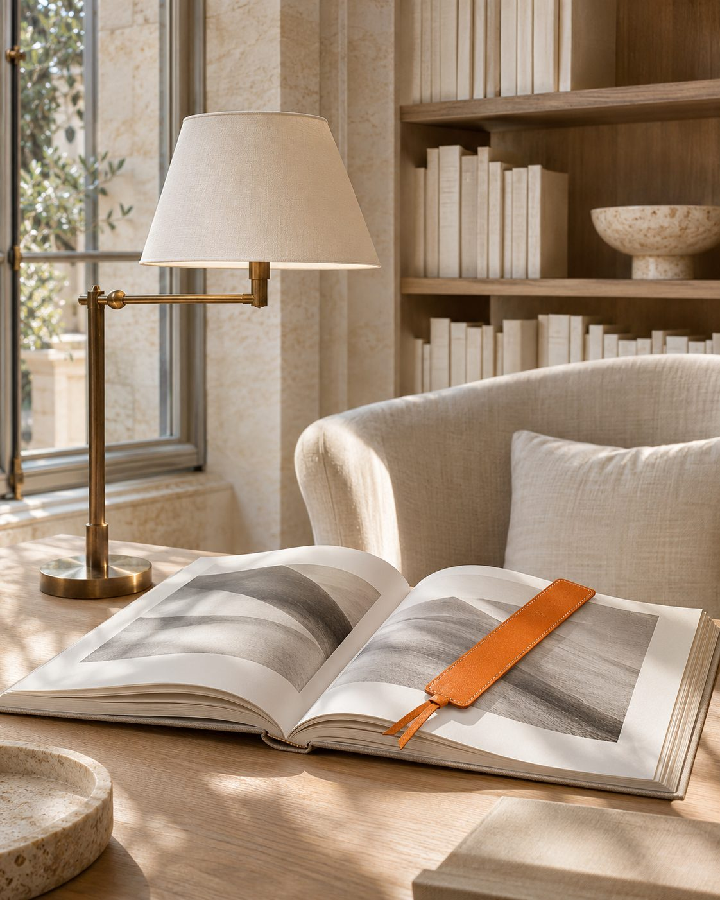
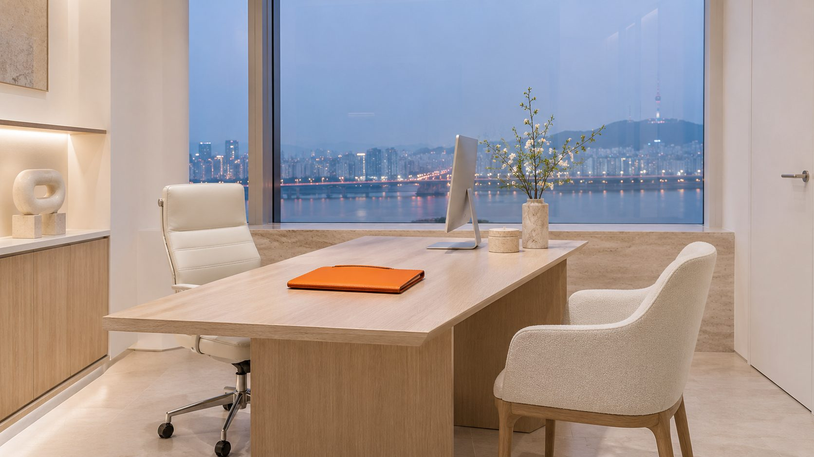
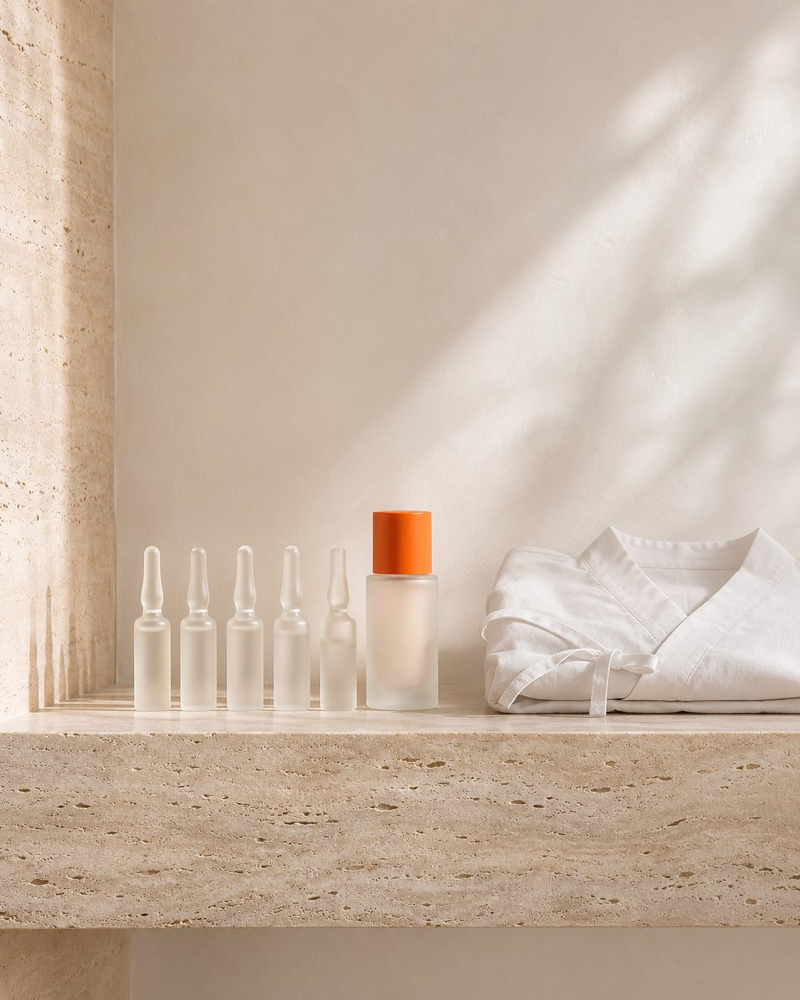
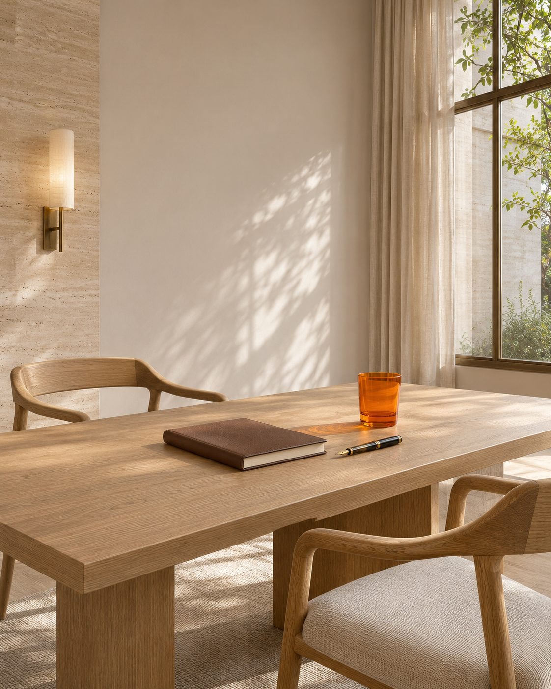
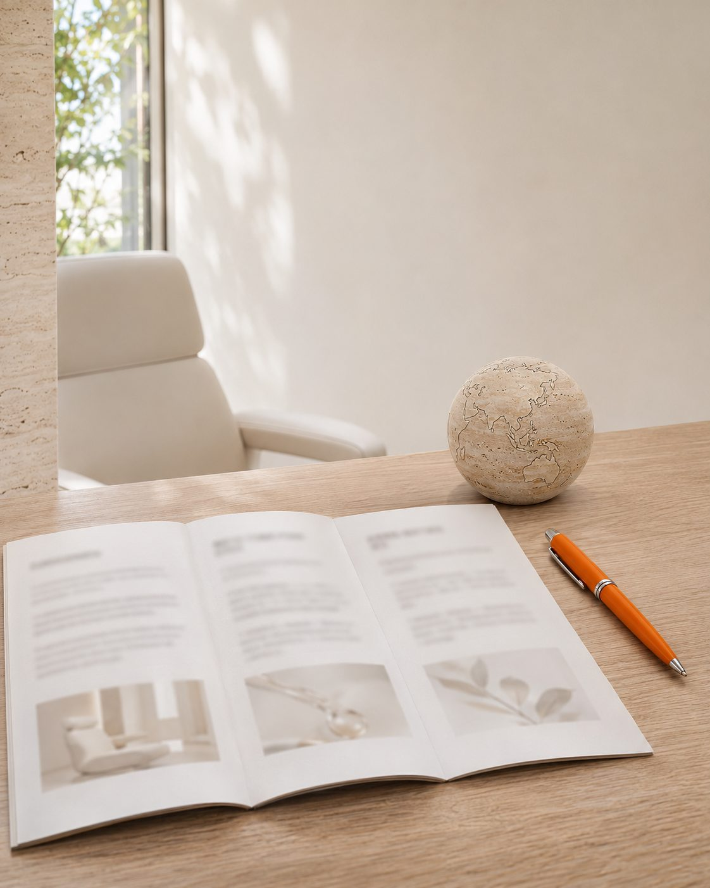
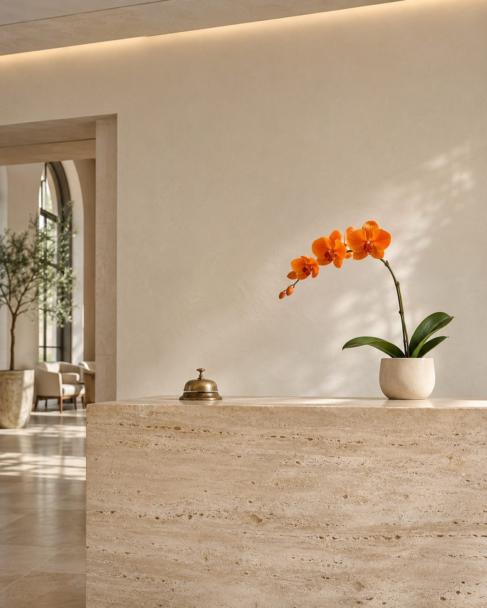

Seen,
then chosen.
보이는 병원이 선택받습니다.
The clinic people see is the clinic they choose.
見つけてもらえるクリニックが、選ばれるクリニックです。
被看见的诊所，才会被选择。
被看見的診所，才會被選擇。
개원부터 해외 환자까지,
병원을 하나의 브랜드로 만드는 6가지 방법
Six ways to turn a clinic into a brand, from opening day to patients abroad
開院から海外患者まで、クリニックをブランドに変える6つの方法
从开业到海外患者，让诊所成为品牌的6种方法
從開業到海外患者，讓診所成為品牌的6種方法
Scroll to open →In this
issue
- 01Ground
개원 세팅Opening開院开业開業p. 08 - 02Frame
홈페이지Websiteウェブサイト官网官網p. 14 - 03Signal
이벤트·디자인Promotionプロモーション活动企划活動企劃p. 22 - 04Voice
채널 운영Channelsチャネル渠道运营渠道經營p. 30 - 05Record
진행 차트Progress chart進捗チャート进度表進度表p. 38 - 06Beyond
해외 마케팅Global海外海外海外p. 46

Ground
흔들리지 않는 개원은
첫 수가표에서 시작됩니다.
A steady opening begins with the first price list.
揺るがない開院は、最初の料金表から始まります。
稳健的开业，始于第一份价目表。
穩健的開業，始於第一份價目表。
수가·이벤트 기획, 채널과 계정, 원내 POP, 응대 동선까지. 문을 열기 전에 기반부터 세웁니다.
Pricing, launch promos, channels, in-clinic POP and the front desk — built before the doors open.
料金設計、開院キャンペーン、各種チャネル、院内POP、受付動線まで。扉を開く前に、土台から整えます。
价格与开业活动、渠道与账号、院内POP、接待动线——在开门之前先打好基础。
價格與開業活動、渠道與帳號、院內POP、接待動線——在開門之前先打好基礎。
Frame
홈페이지는 병원의
두 번째 진료실입니다.
Your website is your second consulting room.
ウェブサイトは、二つ目の診察室です。
官网，是诊所的第二间诊室。
官網，是診所的第二間診室。
의료진, 장비, 시술을 환자가 궁금해하는 순서로. 광고가 도착할 랜딩 페이지까지 같은 결로 만듭니다.
Doctors, equipment and treatments in the order patients ask — landing pages in the same hand.
医師・機器・施術を、患者が知りたい順番に。広告の着地ページまで同じトーンで仕上げます。
医生、设备、项目，按患者关心的顺序呈现；广告落地页也保持同一格调。
醫師、設備、療程，按患者關心的順序呈現；廣告落地頁也保持同一格調。

Signal
이벤트는 할인이 아니라
방문할 이유를 만드는 일입니다.
A promotion isn't a discount. It's a reason to visit.
キャンペーンは値引きではなく、来院する理由をつくること。
活动不是打折，而是创造来院的理由。
活動不是打折，而是創造來院的理由。
시즌과 주력 시술에 맞춘 월간 기획. 플친, 인스타그램, 원내 안내물이 한 장의 화보처럼 이어집니다.
Monthly plans by season and treatment, carried across Kakao, Instagram and print like one editorial.
季節と主力施術に合わせた月間企画。カカオ、Instagram、院内ツールまで一冊のグラビアのようにつなげます。
按季节与主打项目策划月度活动，Kakao、Instagram与院内物料如同一组画报般连贯。
按季節與主打療程策劃月度活動，Kakao、Instagram與院內物料如同一組畫報般連貫。


Voice
원장님의 진료 철학이
검색 결과에 남도록.
So your philosophy of care is what search results say.
院長の診療哲学が、検索結果に残るように。
让院长的诊疗理念，留在搜索结果里。
讓院長的診療理念，留在搜尋結果裡。
네이버 블로그·플레이스부터 구글·유튜브, 메타 광고, 시술 플랫폼까지. 채널이 달라도 목소리는 하나로.
From Naver Blog and Place to Google, YouTube, Meta ads and treatment platforms — many channels, one voice.
Naverブログ・プレイスからGoogle、YouTube、Meta広告、施術プラットフォームまで。チャネルが違っても、声はひとつに。
从Naver博客、Naver地图到Google、YouTube、Meta广告与医美平台——渠道不同，声音如一。
從Naver部落格、Naver地圖到Google、YouTube、Meta廣告與醫美平台——渠道不同，聲音如一。
Record
계약한 항목은
하나도 사라지지 않습니다.
Nothing you sign for goes missing.
契約した項目は、ひとつも消えません。
签约的每一项，都不会落下。
簽約的每一項，都不會落下。
| OP-01 | 오픈 세팅 · 수가표Opening · price list開院 · 料金表开业 · 价目表開業 · 價目表 | DONE |
| WB-01 | 홈페이지 국문Website · Koreanウェブサイト · 韓国語官网 · 韩文官網 · 韓文 | DONE |
| WB-02 | 홈페이지 영문Website · Englishウェブサイト · 英語官网 · 英文官網 · 英文 | IN PROGRESS |
| EV-03 | 월 이벤트 디자인Monthly promo design月間キャンペーンデザイン月度活动设计月度活動設計 | 2 / 3 |
| CH-02 | 블로그 체험단Blog reviewersブログ体験レビュー博客体验评测部落格體驗評測 | 9 / 15 |
Beyond
국경 밖의 환자도
같은 진료실로.
Patients from abroad, into the same room.
海外の患者さまも、同じ診察室へ。
海外患者，也走进同一间诊室。
海外患者，也走進同一間診室。
샤오홍수·도우인·위챗(중국), LINE(일본), 구글·메타(글로벌)까지. 국가별 채널과 다국어 홈페이지, 외국인 환자 응대 자료를 국내와 같은 차트에서 관리합니다.
Xiaohongshu, Douyin and WeChat for China, LINE for Japan, Google and Meta worldwide — plus multilingual sites and patient materials, in the same chart as domestic work.
中国は小紅書・抖音・WeChat、日本はLINE、グローバルはGoogle・Meta。多言語サイトや外国人患者向け資料まで、国内と同じチャートで管理します。
中国用小红书、抖音、微信，日本用LINE，全球用Google与Meta——连同多语言官网与外籍患者资料，与国内项目在同一张进度表中管理。
中國用小紅書、抖音、微信，日本用LINE，全球用Google與Meta——連同多語言官網與外籍患者資料，與國內項目在同一張進度表中管理。

Letter from the editor
Make it
iconic.
좋은 진료는 이미 하고 계십니다.
환자가 그 사실을 알아보기까지의 거리가 문제일 뿐입니다.
메디앤씨는 그 거리를 디자인합니다.
첫 검색에서 보이는 사진 한 장, 홈페이지의 첫 문장, 대기실 배너의 서체까지.
하나의 결로 이어질 때 병원은 동네 의원이 아니라 이름 있는 브랜드가 됩니다.
그리고 그 모든 과정을 차트에 남깁니다.
화려하게 시작해서 흐지부지 끝나는 마케팅은 하지 않습니다.
You already deliver great care. The only question is how far a patient has to travel before they notice.
We design that distance — the first photo in search, the first line on your website, the typeface on the waiting-room banner. When every piece speaks in one hand, a clinic stops being a local practice and becomes a name.
And we keep every step on record. No marketing that starts loud and fades out.
すでに良い診療をされています。問題は、患者がそれに気づくまでの距離だけです。
メディアンドシーはその距離をデザインします。検索で最初に目にする一枚の写真、ウェブサイトの最初の一文、待合室バナーの書体まで。すべてがひとつのトーンでつながったとき、クリニックは街の医院ではなく、名のあるブランドになります。
そして、そのすべての過程をチャートに残します。華やかに始まって、いつの間にか消えるマーケティングはしません。
您早已提供优秀的诊疗。问题只在于，患者要走多远才会注意到。
Medi&C 设计的正是这段距离——搜索结果里的第一张照片、官网的第一句话、候诊区横幅的字体。当每一处都以同一种语气呈现，诊所便不再只是社区诊所，而是一个有名字的品牌。
我们也会把每一步记录在进度表上。不做开头轰轰烈烈、最后不了了之的营销。
您早已提供優秀的診療。問題只在於，患者要走多遠才會注意到。
Medi&C 設計的正是這段距離——搜尋結果裡的第一張照片、官網的第一句話、候診區橫幅的字體。當每一處都以同一種語氣呈現，診所便不再只是社區診所，而是一個有名字的品牌。
我們也會把每一步記錄在進度表上。不做開頭轟轟烈烈、最後不了了之的行銷。
— 전직원 일동Teamスタッフ一同全体员工全體同仁
Free 30-minute review
Your clinic,
in couture.
병원에 맞춤 재단한 브랜딩. 30분 무료 진단으로 시작하세요.
Branding cut to measure for your clinic. Start with a free 30-minute review.
クリニックのために仕立てるブランディング。まずは30分の無料診断から。
为诊所量身剪裁的品牌打造。从30分钟免费诊断开始。
為診所量身剪裁的品牌打造。從30分鐘免費診斷開始。
무료 진단 신청Book a review無料診断を申し込む预约免费诊断預約免費診斷 →Services · Nº 01
Cut to
measure.
필요한 항목만 골라 계약하세요. 모든 서비스는 항목 코드와 수량으로 계약되고, 계약한 만큼 실행하고 보고합니다.
Choose only what you need. Every service is contracted by item and quantity, delivered and reported as signed.
必要な項目だけをお選びください。すべてのサービスは項目と数量で契約し、契約どおりに実行・報告します。
只选您需要的项目。所有服务按项目与数量签约，签多少、做多少、报多少。
只選您需要的項目。所有服務按項目與數量簽約，簽多少、做多少、報多少。

OP
Opening
개원 세팅
- OP-01
수가표·이벤트 기획지역 시세와 주력 시술 기준
Price list & launch promosLocal rates and key treatments
料金表・開院キャンペーン地域相場と主力施術を基準に
价目表与开业活动依据当地行情与主打项目
價目表與開業活動依據當地行情與主打療程
- OP-02
채널·계정 세팅플레이스, 카카오 채널, 인스타그램, 플랫폼 입점
Channels & accountsNaver Place, Kakao, Instagram, platforms
チャネル・アカウント設定Naver Place、カカオ、Instagram、各種プラットフォーム
渠道与账号设置Naver Place、Kakao、Instagram、各平台入驻
渠道與帳號設定Naver Place、Kakao、Instagram、各平台進駐
- OP-03
원내 POP·인쇄물배너, 시술 안내, 대기실 비치물
In-clinic POP & printBanners, guides, waiting room
院内POP・印刷物バナー、施術案内、待合室ツール
院内POP与印刷物横幅、项目介绍、候诊区物料
院內POP與印刷物橫幅、療程介紹、候診區物料
- OP-04
응대 동선 세팅문의부터 예약까지
Front-desk flowFrom inquiry to booking
受付動線の設計問い合わせから予約まで
接待动线设计从咨询到预约
接待動線設計從諮詢到預約
WB
Website
홈페이지·랜딩
- WB-01
병원 홈페이지 국문의료진·장비·시술 구조 설계
Korean clinic websiteDoctors, equipment, treatments
韓国語ウェブサイト医師・機器・施術の構成設計
韩文官网医生、设备、项目结构设计
韓文官網醫師、設備、療程結構設計
- WB-02
해외 버전영어·일본어·중국어
International versionsEnglish, Japanese, Chinese
海外版サイト英語・日本語・中国語
海外版官网英文、日文、中文
海外版官網英文、日文、中文
- WB-03
이벤트 랜딩 페이지광고 유입용 단일 페이지
Promo landing pagesFor ad traffic
キャンペーン用LP広告流入向けの単一ページ
活动落地页承接广告流量的单页
活動落地頁承接廣告流量的單頁
- WB-04
유지보수시술·가격·의료진 변경 반영
MaintenanceTreatments, prices, staff
保守運用施術・料金・医師情報の更新
维护更新项目、价格、医生信息变更
維護更新療程、價格、醫師資訊變更
EV
Promotion
이벤트 기획·디자인
- EV-01
월간 이벤트 기획시즌·주력 시술 기준
Monthly promo planningBy season and treatment
月間キャンペーン企画季節・主力施術を基準に
月度活动策划依据季节与主打项目
月度活動策劃依據季節與主打療程
- EV-02
카카오 플친 메시지문안과 이미지
Kakao channel messagesCopy and visuals
カカオチャネル配信文面とビジュアル
Kakao频道推送文案与视觉
Kakao頻道推播文案與視覺
- EV-03
인스타그램 콘텐츠피드·스토리
Instagram contentFeed and stories
Instagramコンテンツフィード・ストーリーズ
Instagram内容贴文与限时动态
Instagram內容貼文與限時動態
- EV-04
A4 안내물·배너원내 게시용
A4 flyers & bannersIn-clinic display
A4案内・バナー院内掲示用
A4宣传单与横幅院内张贴用
A4宣傳單與橫幅院內張貼用
CH
Channel
채널 운영
- CH-01
브랜드 블로그진료 철학이 드러나는 글
Brand blogYour approach to care, in writing
ブランドブログ診療哲学が伝わる記事
品牌博客传达诊疗理念的文章
品牌部落格傳達診療理念的文章
- CH-02
블로그 체험단모집·가이드·게시 확인
Blog reviewer programRecruit, brief, verify
ブログ体験レビュー募集・ガイド・掲載確認まで
博客体验评测招募、指引、发布确认
部落格體驗評測招募、指引、發布確認
- CH-03
시술 플랫폼 광고여신티켓·강남언니·바비톡 등
Treatment platform adsYeoshin Ticket, Gangnam Unni, Babitalk
施術プラットフォーム広告Yeoshin Ticket、江南オンニ、Babitalkなど
医美平台广告Yeoshin Ticket、江南姐姐、Babitalk等
醫美平台廣告Yeoshin Ticket、江南姐姐、Babitalk等
- CH-04
온라인 평판 모니터링후기·커뮤니티 정기 점검
Reputation monitoringReviews and communities
評判モニタリング口コミ・コミュニティの定期点検
口碑监测评价与社群定期检查
口碑監測評價與社群定期檢查
- CH-05
검색·SNS 광고네이버·구글·메타
Search & social adsNaver, Google, Meta
検索・SNS広告Naver・Google・Meta
搜索与社媒广告Naver、Google、Meta
搜尋與社群廣告Naver、Google、Meta
- CH-06
유튜브 콘텐츠시술 영상·숏폼 기획
YouTube contentTreatment videos and shorts
YouTubeコンテンツ施術動画・ショート動画の企画
YouTube内容项目视频与短视频策划
YouTube內容療程影片與短影音企劃
Your clinic,
in couture.
무료 진단 신청Book a review無料診断を申し込む预约免费诊断預約免費診斷 →Process · Nº 02
On
record.
첫 상담부터 월간 보고까지 다섯 단계. 모든 단계가 기록으로 남습니다.
Five steps from first call to monthly report, every one of them on record.
初回相談から月次レポートまで5ステップ。すべての工程が記録に残ります。
从首次咨询到月度报告共五步，每一步都有记录。
從首次諮詢到月度報告共五步，每一步都有紀錄。

- 01
상담
Consultation
ご相談
咨询
諮詢
위치, 주력 시술, 개원 일정, 지금 쓰는 채널을 듣습니다. 30분이면 충분합니다.
Location, key treatments, timeline and current channels. Thirty minutes is enough.
立地、主力施術、開院スケジュール、現在のチャネルをお伺いします。30分で十分です。
了解地点、主打项目、开业时间与现有渠道，30分钟足矣。
了解地點、主打療程、開業時間與現有渠道，30分鐘足矣。
- 02
진단
Diagnosis
診断
诊断
診斷
홈페이지, 플레이스, 플랫폼 노출, 경쟁 병원 수가를 점검해 빈 곳을 보여드립니다.
Website, Naver Place, platforms and competitor pricing, with the gaps marked.
ウェブサイト、Naver Place、プラットフォーム露出、競合の料金を点検し、足りない部分をお示しします。
检查官网、Naver Place、平台曝光与竞品价格，指出空白之处。
檢查官網、Naver Place、平台曝光與競品價格，指出空白之處。
- 03
항목 확정·계약
Scope & contract
項目確定・契約
确定项目与签约
確定項目與簽約
필요한 항목만 코드와 수량으로 확정합니다. 이 목록이 그대로 진행 차트가 됩니다.
Only what you need, by code and quantity. That list becomes your progress chart.
必要な項目だけを、コードと数量で確定。そのリストがそのまま進捗チャートになります。
只确定所需项目的编号与数量，这份清单就是您的进度表。
只確定所需項目的編號與數量，這份清單就是您的進度表。
- 04
실행·체크
Execution
実行・チェック
执行与检查
執行與檢查
담당자가 항목별로 착수·진행·완료를 기록합니다. 원장님 확인이 필요한 것만 따로 여쭙니다.
Each item logged as started, in progress or done. We ask only when your approval is needed.
担当者が項目ごとに着手・進行・完了を記録します。院長の確認が必要なときだけご相談します。
负责人按项目记录开始、进行、完成，只在需要院长确认时请示。
負責人按項目記錄開始、進行、完成，只在需要院長確認時請示。
- 05
월간 보고
Monthly report
月次レポート
月度报告
月度報告
계약 대비 완료 현황, 결과물 링크, 다음 달 제안을 함께 보내드립니다.
Completion against contract, links to every deliverable, next month's proposal.
契約に対する完了状況、成果物リンク、翌月のご提案をお送りします。
发送对照合同的完成情况、成果链接与下月提案。
發送對照合約的完成情況、成果連結與下月提案。
Global · EN · JA · ZH
Across
borders.
검색 언어, 쓰는 앱, 믿는 후기가 나라마다 다릅니다. 국가별 경로에 맞춰 병원을 다시 소개합니다.
Search language, apps and trusted reviews differ by country. We reintroduce your clinic for each market.
検索する言語も、使うアプリも、信頼する口コミも国ごとに違います。国別の経路に合わせて、クリニックを紹介し直します。
搜索语言、常用App、信赖的评价因国家而异。我们按各国路径重新介绍您的诊所。
搜尋語言、常用App、信賴的評價因國家而異。我們按各國路徑重新介紹您的診所。

GL-01
Multilingual sites
다국어 홈페이지
번역이 아니라 현지 환자가 궁금해하는 순서로 다시 씁니다. 시술명, 가격 표기, 예약 방법까지 현지 기준으로.
Rewritten in the order local patients ask. Names, pricing and booking follow local norms.
翻訳ではなく、現地の患者が知りたい順に書き直します。施術名、料金表記、予約方法まで現地基準で。
不是翻译，而是按当地患者关心的顺序重写；项目名称、价格标示、预约方式都依当地习惯。
不是翻譯，而是按當地患者關心的順序重寫；療程名稱、價格標示、預約方式都依當地習慣。
GL-02
Overseas channels
해외 채널 운영
중국은 샤오홍수·도우인·위챗, 일본은 LINE, 그 밖의 국가는 구글·메타. 국가별 채널을 세팅하고 문의 응대 흐름까지 만듭니다.
Xiaohongshu, Douyin and WeChat for China, LINE for Japan, Google and Meta elsewhere — set up per market, with a flow to answer inquiries.
中国は小紅書・抖音・WeChat、日本はLINE、その他の国はGoogle・Meta。国別にチャネルを整え、問い合わせ対応の流れまでつくります。
中国用小红书、抖音、微信，日本用LINE，其他国家用Google与Meta。按国家搭建渠道，并建立咨询接待流程。
中國用小紅書、抖音、微信，日本用LINE，其他國家用Google與Meta。按國家建置渠道，並建立諮詢接待流程。
GL-03
Patient materials
외국인 환자 응대 자료
상담지, 시술 안내, 사후 관리 안내문을 언어별로 준비합니다.
Consultation forms, treatment guides and aftercare sheets in each language.
問診票、施術案内、アフターケア案内を言語別にご用意します。
按语言准备咨询表、项目说明与术后护理指南。
按語言準備諮詢表、療程說明與術後護理指南。
GL-04
One chart
국내와 한 차트로
해외 항목도 같은 진행 차트에서 관리합니다. 국내와 해외가 따로 움직이지 않습니다.
International items live in the same chart, so both sides move together.
海外項目も同じ進捗チャートで管理。国内と海外がばらばらに動きません。
海外项目也在同一张进度表中管理，国内与海外同步推进。
海外項目也在同一張進度表中管理，國內與海外同步推進。
Contact
Tell us
about your clinic.
영업일 기준 하루 안에 담당자가 연락드립니다.
A manager will reply within one business day.
営業日1日以内に担当者よりご連絡いたします。
我们将在一个工作日内与您联系。
我們將在一個工作日內與您聯繫。

- info@medinc.co.kr
- Web
- www.medinc.co.kr
- Hours
- 평일 10:00 – 19:00Weekdays 10:00 – 19:00 KST平日 10:00 – 19:00（韓国時間）工作日 10:00 – 19:00（韩国时间）工作日 10:00 – 19:00（韓國時間）